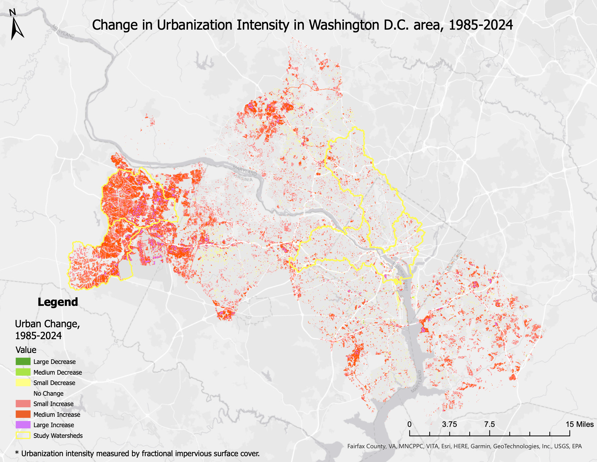
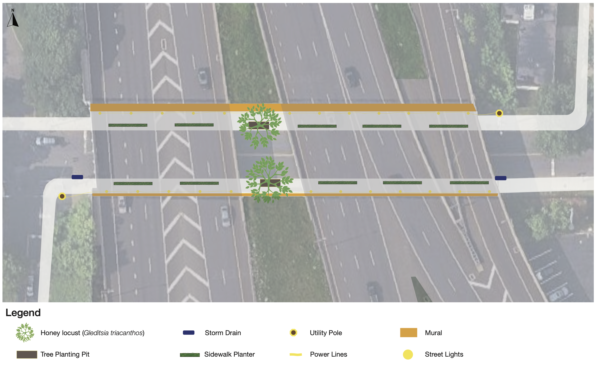

Recent Projects

Senior Thesis
Modeling How Urbanization Patterns Shape Flood Risk in Washington D.C. and its Suburbs
Learn more

Chapel Street Transect
Mapping street-level greenery to design a revitalized I-91 underpass.
Learn more
Embarcadero Freeway Case Study
Understanding the impacts of urban freeways, and their removal, on local neighborhoods.
Learn more
scroll